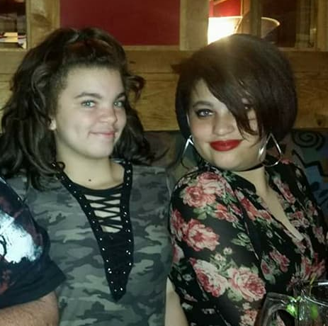

Home
Portfolio
About

Cailin Jefferson
Oldest sister of two (one to the left, next to me), Mathletes president, and rank 4 student (colleges hit me up) Cailin is a very boring, no life having, nerd. Mom of two cats, a dog, and one asian kid. Works at Schiit Audio and goes to school at the Palmdale Aerospace Academy. Almost, maybe, kinda, good at speaking Mandarin. With great friends, amazing family, and wonderful teachers that support her, she is determined to do big things.
Sincerely, Cailin